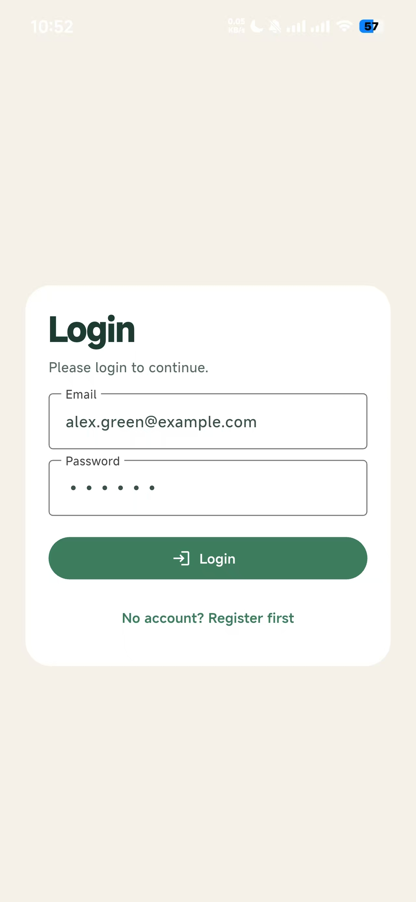
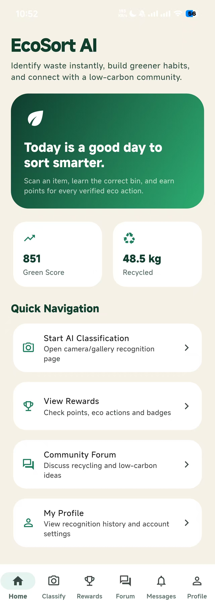
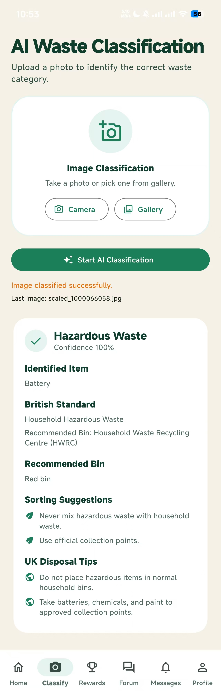
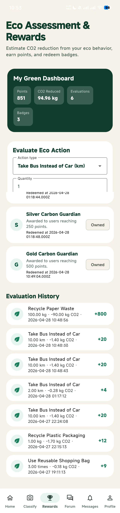
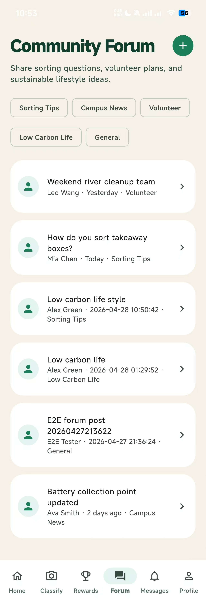
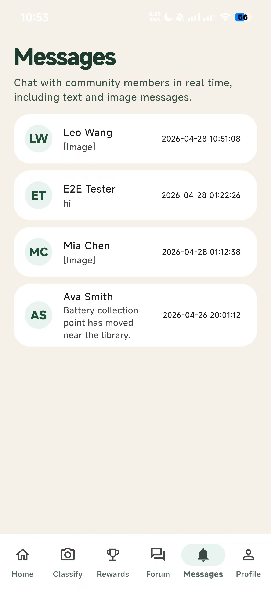
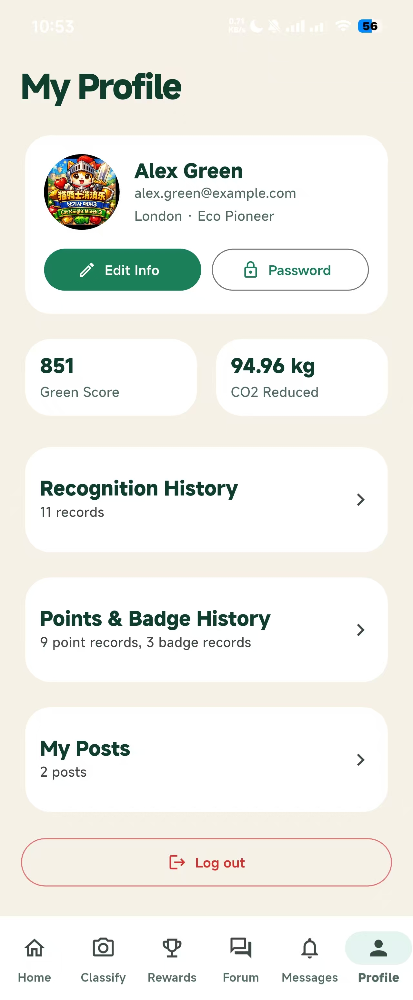

Home
Dashboard with green score, recycled weight, and quick navigation.
Final App Presentation
EcoSort AI helps users classify waste, track low-carbon actions, earn rewards, and participate in a green community through one connected mobile experience.
Replace the placeholder below with your final demo video or GIF recorded from a physical device or simulator.
Drop your demo file in docs/assets/demo.mp4 or update the embed URL.
Many users are unsure how to sort waste correctly, and motivation to sustain eco-friendly behavior is often low without feedback or rewards.
EcoSort AI combines guided waste classification, behavior evaluation, gamified rewards, and social participation to turn awareness into action.
These six modules match the final app architecture and navigation.
Dashboard with green score, recycled weight, and quick navigation.
Image-based waste recognition with category confidence and disposal tips.
CO2 reduction evaluation, points accumulation, and badge redemption.
Community posting, comments, likes, and peer interaction.
Direct chat conversations with text/image messaging support.
User info, recognition history, point history, and badge records.
Real screenshots from the current build.







Presentation-ready user journey from first use to sustained engagement.
User registers/logs in and enters a personalized app shell.
User captures/selects image, gets classification confidence and disposal guidance.
User records eco behavior, receives calculated CO2 reduction and points.
User redeems badges, tracks progress in profile and dashboard metrics.
User joins forum/chat discussions to share practical sorting experiences.
How mobile frontend and backend services work together.
Uses a centralized ApiClient for REST communication,
with modular screens and graceful fallback behavior in selected pages.
Exposes authenticated REST endpoints for classification, rewards, forum, messaging, and profile data.
Integrates Alibaba Cloud image recognition (optional runtime config) and maps results into project waste categories.
Aligned with your marking rubric.
Up to 3 minutes showing key app tasks and user outcomes.
This page showcases value proposition, functionality, and architecture.
Cover design inception, storyboarding/wireframes, data handling, interactivity, and API/service integration.
Clear flow, visual consistency, and confident delivery.